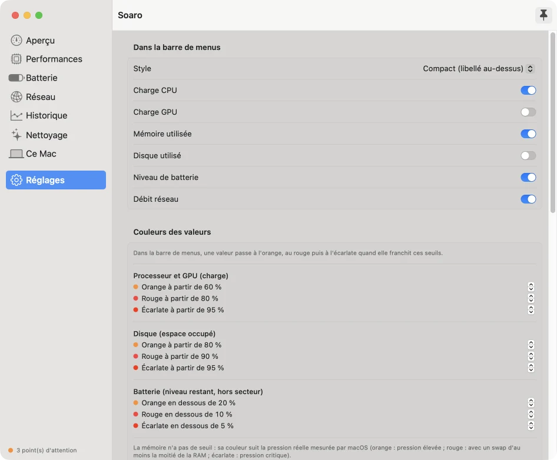

Dans la barre de menus
Choisissez ce que vous voulez voir, à côté de l'horloge. Une valeur passe à l'orange, au rouge, puis à l'écarlate quand elle se dégrade. Vous choisissez les seuils, et le survol de l'icône vous dit pourquoi une valeur est colorée.
